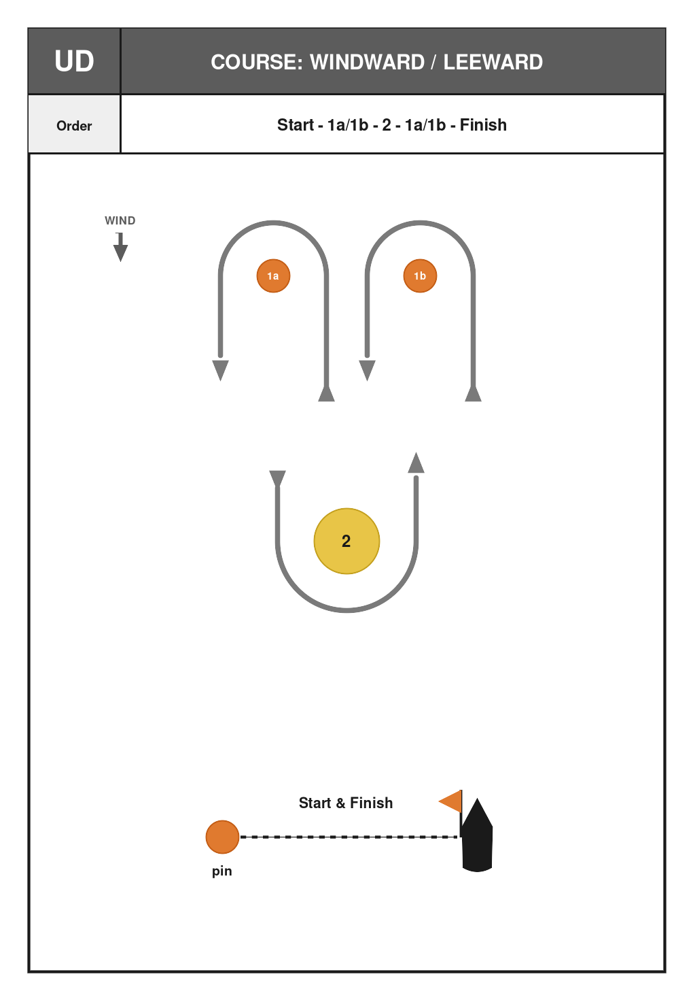

Diese Segelanweisung gilt für die DHH Vereinsregatta an der Hanseatischen Yachtschule Glücksburg am Samstag, dem 26. September 2026.
Regeln
Die Regatta wird nach den Racing Rules of Sailing 2025–2028 (RRS) von World Sailing gesegelt.
Diese Segelanweisung und etwaige Änderungen werden am betreffenden Tag vor 08:45 in der Bootshalle ausgehängt.
Die genannten Startzeiten sind grobe Richtwerte und werden auf dem Wasser der Situation angepasst.
Boote und Ausrüstung
Die Boote werden den Crews per Zufallsverfahren zugeteilt.
Es gilt für jedes Boot die Hörbereitschaft auf Kanal 2.
Die Boote dürfen nicht verändert werden. Es darf nur die bereits an Bord befindliche Ausrüstung verwendet werden. Die Ausrüstung muss an Bord verbleiben.
Zeitplan
09:00
Skippers briefing
10:00
Probestart
10:15
1. Warnsignal up- and down Kurs. Folgende Wettfahrten starten sobald möglich.
14:20
Warnsignal Mittelstrecke
Signale
Flagge AP (Antwortwimpel): Noch nicht gestartete Wettfahrten sind verschoben. Das Warnsignal erfolgt 1 Minute nach dem Niederholen, sofern die Wettfahrt nicht erneut verschoben oder abgebrochen wird.
Klassenzeichen („F“) bzw. („HKB“) auf weißem Grund.
Flagge P (Papa): Vorbereitungssignal gemäß RRS 26. Boote, die sich auf der Kursseite der Startlinie befinden, dürfen durch Zurückqueren der Linie (Eintauchen) auf die Prestartseite zurückkehren.
Flagge X: Einzelrückruf gemäß RRS 29.1. Die Flagge wird mit einem Schallsignal gezeigt, wenn sich beim Startsignal irgendein Teil des Rumpfes eines Bootes auf der Kursseite der Startlinie befindet.
1. Hilfsstander: Generalrückruf gemäß RRS 29.2. Das Warnsignal für den neuen Start erfolgt 1 Minute nach dem Niederholen.
Flagge S: Die Wettfahrtleitung kann den Kurs nach dem Startsignal verkürzen, indem sie Flagge S mit zwei Schallsignalen zeigt; die Ziellinie liegt dann zwischen den angegebenen Marken, gemäß RRS 32.2.
Flagge N: Alle laufenden Wettfahrten sind abgebrochen. Die Boote kehren ins Startgebiet zurück. Das Warnsignal erfolgt 1 Minute nach dem Niederholen, sofern die Wettfahrt nicht erneut abgebrochen oder verschoben wird.
Flagge N über H: Alle laufenden Wettfahrten sind abgebrochen. Weitere Signale an Land.
Start der Wettfahrten
Die Wettfahrten werden nach RRS 26 gestartet.
5 Minuten
Warnsignal (Klassenflaggen F und HKB gehisst, 1 Schallsignal).
4 Minuten
Vorbereitungssignal (Vorbereitungsflagge Papa gehisst, 1 Schallsignal).
1 Minute
Vorbereitungssignal (Vorbereitungsflagge Papa niedergeholt, 1 langes Schallsignal).
Das Wettfahrtgebiet liegt auf der Flensburger Förde vor dem Hafen der Hanseatischen Yachtschule Glücksburg.
Up- and down (L-Kurs): Startlinie, Marke 1 (Backbord lassen), 2s/2p, Marke 1, Ziellinie. Die Signaltafel L2, L3 oder L4 gibt die Rundenzahl an. Start- und Ziellinie sind dieselbe Linie zwischen pin end und oranger Flagge am Startschiff.

L course with mark 2. Leave 1 to port. Leave 2p to port or 2s to starboard.
Bahnmarken sowie Start- und Ziellinie
Bahnmarken
Alle Rundenmarken sind orange oder gelbe Zylinderbojen (Crewsaver, Minions), sofern nicht anders bekannt gegeben.
Start- und Ziel
Die Start- und Ziellinie befindet sich zwischen der orangen Flagge am Startschiff und dem pin end (Crewsaver).
Zeitlimits
Das Zeitlimit für das erste Boot, das den Kurs segelt und das Ziel erreicht, beträgt 40 Minuten (up- and downs) bzw. 120 Minuten (Mittelstrecke).
Boote, die nicht innerhalb von 20 Minuten (up- and down) bzw. 60 Minuten (Mittelstrecke) nach dem Ziel des ersten Bootes das Ziel erreichen, werden ohne Anhörung als DNF (Did Not Finish) gewertet.
Proteste und Strafen
Die Jury entscheidet auf dem Wasser. Ein Protest zu einem Vorfall im Wettfahrtgebiet ist nur während der betreffenden Wettfahrt zulässig; nach dem Ziel sind keine Proteste und keine Anträge auf Wiedergutmachung mehr zulässig. Ein schriftlicher Protest ist nicht erforderlich. Die Jury kann eine Strafe ohne Anhörung verhängen. Dies ändert RRS 60.3, 60.5, 61.2 und 63.
Ein Boot, das protestieren will, soll möglichst sofort „Protest“ rufen und die Jury unverzüglich auf dem Wasser informieren. Eine rote Protestflagge ist nicht erforderlich. Dies ändert RRS 60.2(a)(1).
Es gilt die Eine-Drehung-Strafe. Dies ändert RRS 44.1.
Wertung
Die Wertung erfolgt nach bereinigter Zeit mit den aktuellen Yardstick-Werten der HYS.
Es sind vier Wettfahrten geplant; mindestens eine gewertete Wettfahrt ist für eine Gesamtwertung erforderlich.
Details zu Kursen, Bahnmarken und Starts gibt es in der Bootshalle und beim Skippers briefing. Die Startzeiten sind grobe Richtwerte und werden auf dem Wasser der Situation entsprechend angepasst.
Series results
Low-point scoring, RRS Appendix A. No discard. Ties broken from the last race back.
Pl
Sail
R1
R2
R3
Total
Net
1
HYS-E
1
2
1
4
4
2
HYS-10
6
6
3
15
15
3
HYS-D
3
1
12
16
16
4
HYS-7
5
11
4
20
20
5
HYS-J
4
5
13
22
22
6
HYS-R
7
9
7
23
23
7
HYS-S
12
4
9
25
25
8
HYS-A
13
3
10
26
26
9
HYS-15
10
13
5
28
28
10
HYS-B
2
12
14
28
28
11
HYS-9
9
14
6
29
29
12
HYS-8
8
10
11
29
29
13
HYS-G
14
15
2
31
31
14
HYS-6
11
17
8
36
36
15
HYS-H
15
7
16
38
38
16
HYS-14
19
8
19
46
46
17
HYS-F
16
16
15
47
47
18
HYS-3
19
19
19
57
57
Discarded scores are struck through. DNC scores entries+1; other non-finishes score starters+1.